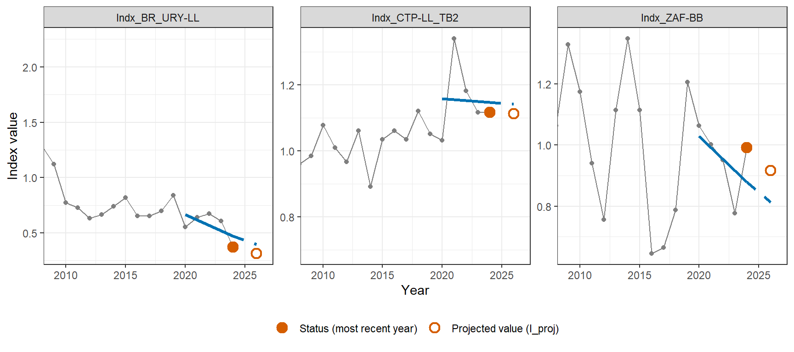
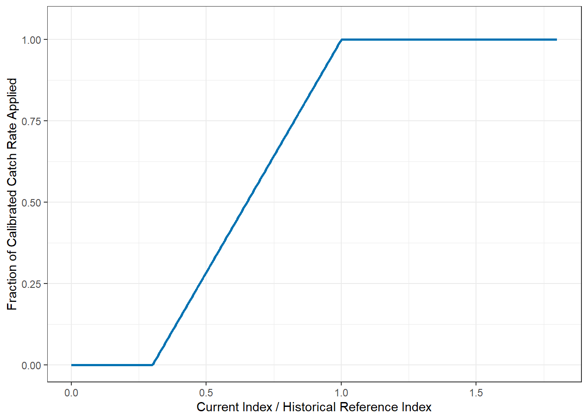
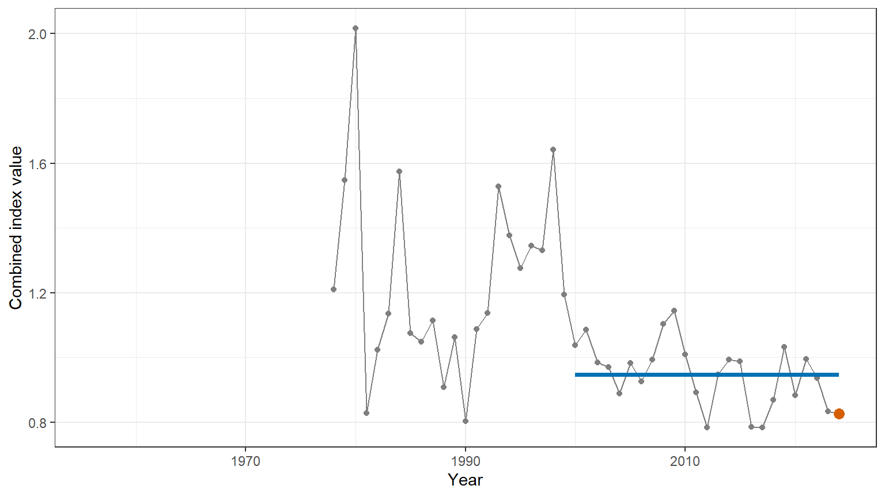

| Code | Label | tunepar | Max change / cycle | Notes |
|---|---|---|---|---|
| MCC | Mostly Constant Catch | 0.98 | – | – |
| IR | Index Rate | 0.76 | 50% | – |
| IR_20 | Index Rate 20% Cap | 0.72 | 20% | – |
| Ens | Ensemble | 1.03 | 50% (IR) | MCC tunepar 0.95, IR tunepar 0.71 |
| Ens_20 | Ensemble 20% Cap | 1.02 | 20% (IR) | MCC tunepar 0.95, IR tunepar 0.72 |
5 Candidate Management Procedures
The MSE currently includes three model-free CMP families:
- Index Rate
- Mostly Constant Catch
- Ensemble
There are two variants of the Index Rate and Ensemble CMPs, making a total five CMPs included in the analysis (Table 5.1). Each CMP is described in full in the sections below.
Model-based CMPs using a surplus production assessment model (SPiCT; Pedersen and Berg (2017)) were thoroughly explored but were not included in the final analysis due to the consistent poor performance relative to the model-free CMPs.
5.1 Description of CMPs
5.1.1 Index Rate
The Index Rate CMPs use the Chinese Taipei longline, Brazil-Uruguay longline, and South Africa baitboat indices, together with catch data from the last historical year, to set each management cycle’s trial catch limit in five steps:
- Each index’s current status is projected forward using its own short-term trend, and the three indices are combined (equally weighted) into a single current index value, \(I_{\text{cur}}\), and a single historical reference level, \(I_{\text{ref}}\).
- Each index is separately calibrated into its own catch-per-index rate: the total catch across all fleets in the last historical year, divided by that index’s own value in the calibration period.
- A single ramped response, based on how \(I_{\text{cur}}\) compares with \(I_{\text{ref}}\), throttles all three indices’ rates by the same fraction.
- Each index’s most recent value, multiplied by its own throttled rate, gives that index’s own implied catch limit; the trial catch limit is the equally-weighted average of the three.
- Only a fraction of the move from the previous cycle’s catch limit to the trial catch limit is actually taken (the
Responsivenessparameter), and the resulting change is then optionally further capped.
These steps are described in more detail below.
Each index’s Status is simply its own most recent-year value. Status is then projected forward to account for any short-term trend: a linear trend is fitted by least-squares regression to the log of the index over the preceding \(n_T\) years, and Status is extrapolated forward \(h\) years at that fitted rate:
\[ I_{\text{proj}} = \text{Status} \times e^{\,\text{Slope} \times h} \] where Slope is the fitted trend (in log-index units per year), \(n_T\) = 5 years is the trend-fitting window, and \(h\) = 2 years is how far forward the status is projected.
This calculation is done separately for each of the three indices, giving each index its own projected value, \(I_{\text{proj}}\) (Figure 5.1). These three \(I_{\text{proj}}\) values are then combined into a single current index, \(I_{\text{cur}}\), as an equally-weighted average across the three indices. Each index’s own historical reference level, the average level over 2007–2010, is combined in the same mannger, using the same equal weighting, to give the combined reference level, \(I_{\text{ref}}\).

Averaging the three indices’ projected values equally gives \(I_{\text{cur}} =\) 0.78, and averaging their three 2007–2010 reference levels equally gives \(I_{\text{ref}} =\) 1.063, so \(I_{\text{cur}}/I_{\text{ref}} =\) 0.734 for this example based on the historical data.
Since each index’s Status is in that index’s own units, not absolute catch or biomass, it must be calibrated before it can be used to set a catch limit. Each index is first turned into its own catch-per-index rate, \(\hat{r}_j\): the total catch across all fleets in the last historical year (CalibYears = 1) divided by that particular index’s own value in that same year:
\[ \hat{r}_j = \frac{\bar{C}_{\text{hist}}}{\bar{I}_{\text{hist},\,j}} \]
where \(j\) indexes the three indices, \(\bar{C}_{\text{hist}}\) is the total catch in the last historical year and \(\bar{I}_{\text{hist},\,j}\) is index \(j\)’s own value in that same year. Because \(\hat{r}_j\) has units of catch per unit of that index, multiplying it by \(\text{Status}_j\) (index \(j\)’s own Status, in the index’s own units) will give a catch value, once the rate itself has been scaled and throttled as described next.
Before that final multiplication, each index’s own rate \(\hat{r}_j\) is scaled by the tuning parameter, \(m\), and throttled by a single response fraction, \(\theta(I_{\text{cur}}/I_{\text{ref}})\) giving each index its own adjusted rate, \(\text{AdjRate}_j\). Each index’s own most recent value, \(\text{Status}_j\), is then multiplied by its own adjusted rate to give that index’s own implied catch limit. The trial catch limit is the equally-weighted average of the three:
\[ \text{AdjRate}_j = m \times \hat{r}_j \times \theta\!\left(\frac{I_{\text{cur}}}{I_{\text{ref}}}\right) \] \[ \text{TrialTAC} = \frac{1}{3}\sum_{j=1}^{3} \text{Status}_j \times \text{AdjRate}_j \]
where \(\text{Status}_j\) is index \(j\)’s own most recent-year value, \(m\) is the tuning parameter, and \(\theta(x)\) ramps the response linearly between two control points:
\[ \theta(x) = \begin{cases} 0 & x \le x_L \\[4pt] \dfrac{x - x_L}{x_U - x_L} & x_L < x < x_U \\[4pt] 1 & x \ge x_U \end{cases} \]
with \(x_L\) = 0.3 and \(x_U\) = 1. When \(I_{\text{cur}}/I_{\text{ref}}\) is at or below \(x_L\) the throttle zeroes out every index’s implied catch limit, at or above \(x_U\) (i.e. at or above the historical reference level) the full calibrated rate is applied, while in between the response ramps up linearly (Figure 5.2).

The Responsiveness parameter, \(R\), controls what fraction of the move from the previous cycle’s catch limit to TrialTAC is actually taken:
\[ \text{Mod} = \left(\frac{\text{TrialTAC}}{\text{TAC}_{\text{prev}}}\right)^{\!R} \] \[ \text{TAC} = \text{TAC}_{\text{prev}} \times \text{Mod} \]
where \(\text{TAC}_{\text{prev}}\) is the previous cycle’s catch limit. The Index Rate variants used in the MSE have \(R =\) 0.5, so a proportional change in TrialTAC relative to \(\text{TAC}_{\text{prev}}\) only moves the actual TAC by that fraction on the log scale.
Finally, this proportional change in the TAC is capped per management cycle; the two Index Rate variants (IR, IR_20) share this structure and differ only in the maximum TAC change cap (Table 5.1).
5.1.2 MCC
Based on the Mostly Constant Catch (MCC) design ICCAT adopted for North Atlantic swordfish, the MCC CMP uses the same abundance indices as Index Rate, together with the last historical year’s total landings, to set each management cycle’s catch limit in three steps.
Unlike Index Rate where the catch limit is iteratively adjusted from the previous cycle’s TAC, MCC uses fixed baseline TAC that is stepped by a pre-agreed multiplier. There is no per-cycle absolute TAC change cap.
- The indices reporting each year are combined into a single series, and that combined series’ most recent value, \(I_{\text{cur}}\), is compared with its own average over a historical reference period, \(I_{\text{ref}}\), giving a ratio, \(I_{\text{rat}}\).
- \(I_{\text{rat}}\) determines which of several pre-agreed bins applies (Table 5.2), each with its own multiplier on the baseline catch level.
- The catch limit is the baseline catch level – the last historical year’s total landings, scaled by the tuning parameter – multiplied by that bin’s multiplier.
Each of these steps is set out in full below.
MCC first combines the raw indices into a single equally-weighted mean combined index \(I_y\) (Figure 5.3):
\[ I_y = \frac{1}{n_y}\sum_{j} I_{j,\,y} \]

\(I_{\text{cur}}\), the combined index’s value in the most recent year (the orange point in Figure 5.3), is compared with \(I_{\text{ref}}\), calculated as the average over a 2000 – 2024 historical reference period (the blue line in Figure 5.3):
\[ I_{\text{rat}} = \frac{I_{\text{cur}}}{I_{\text{ref}}} \]
For this example using the historical data, \(I_{\text{cur}} =\) 0.826, \(I_{\text{ref}} =\) 0.947, so \(I_{\text{rat}} =\) 0.872. \(I_{\text{rat}}\) then determines which multiplier on the baseline catch level from the pre-specified bins applies (Table 5.2).
| Combined Index / Historical Base (\(I_{\text{rat}}\)) | TACbase multiplier |
|---|---|
| < 0.65 | 0.45 |
| 0.65 – 0.90 | 0.80 |
| 0.90 – 1.10 | 1.00 |
| 1.10 – 1.30 | 1.20 |
| 1.30 – 1.40 | 1.30 |
| 1.40 – 1.50 | 1.40 |
| 1.50 – 1.60 | 1.50 |
| 1.60 – 1.70 | 1.60 |
| >= 1.70 | 1.70 |
The catch limit is then the baseline catch level (the last historical year’s total landings across all fleets, scaled by the tuning parameter) multiplied by that bin’s multiplier:
\[ \text{TAC}_{\text{base}} = C_{\text{LHY}} \times m \] \[ \text{TAC} = \text{TAC}_{\text{base}} \times s(I_{\text{rat}}) \]
where \(C_{\text{LHY}}\) is the total landings across all fleets in the last historical year, \(m\) is the tuning parameter, and \(s(\cdot)\) is the step function in Table 5.2. As noted above, there is no per-cycle change cap on top of this step (Table 5.1).
5.1.3 Ensemble
The Ensemble CMP combines MCC and Index Rate by averaging their two independently-computed TAC recommendations. Each cycle, MCC and Index Rate independently compute their own TAC recommendation and the Ensemble’s catch limit is the tuning-parameter-scaled average of the two:
\[ C_{\text{limit}} = m \times \text{mean}\big(C_{\text{MCC}},\ C_{\text{IndexRate}}\big) \]
where \(C_{\text{MCC}}\) and \(C_{\text{IndexRate}}\) are MCC’s and Index Rate’s own recommendations, each computed independently at its own individually-tuned setting for the blend (not necessarily the same setting as the standalone MCC/Index Rate variants in Table 5.1), and \(m\) is the Ensemble’s own tuning parameter (Table 5.1), applied on top of the blend.
Two variants are included:
-
Ensblends MCC with the uncapped Index Rate component; -
Ens_20blends MCC with the 20%-capped Index Rate component
The internal MCC/Index Rate tunepars and the Index Rate caps are shown in Table 5.1.
5.2 Tuning Methodology
Each CMP has a set of structural settings (which data it uses, how that data is combined or smoothed, the shape of its response, how much its recommendation can change between cycles) plus a single tuning parameter, tunepar, that scales how aggressively it converts that data into a TAC recommendation. A two stage process is used to determine the optimal values for both the structural settings and tunepar:
- Each structural setting is explored first, trying a small number of candidate values for that setting (e.g.
CalibYears: 1 vs. 2 years;Smooth: on vs. off;WeightMethod: equal vs. inverse-CV vs. inverse-variance weighting). Once the optimal values for these settings are found, they are fixed and the process moves on totunepar. -
tuneparis then found by grid search over the full pooled Reference OM grid (i.e.,the nine OMs spanning the Growth x Natural Mortality uncertainty grid to find the highest-yield value that still meets the Safety and Status objectives from Resolution 24-09 (Chapter 4), evaluated jointly across all nine OMs.
The resulting tunepar (and, where applicable, per-cycle change cap) for each CMP is given in Table 5.1.
5.2.1 Index Rate
For Index Rate (Section 5.1.1), step 1 fixed:
- which indices to use (all three currently-reporting indices,
WeightMethod = 'equal'); - the calibration window (
CalibYears=1); - whether to smooth the index before use (
Smooth = FALSE; LOESS smoothing is available in the CMP but did not improve on the raw index); - the trend-projection window and horizon (
TrendYears= 5,TrendHorizon= 2); - the shape of the ramped throttle (
RampType = 'linear', control points shown in Figure 5.2); and - the
Responsivenessparameter (0.5, Section 5.1.1).
tunepar (the IndexFactor multiplier on the calibrated rate) was then set by the step-2 grid search, run separately for the uncapped and 20%-capped per-cycle change cap, giving the two variants in Table 5.1.
5.2.2 MCC
For MCC (Section 5.1.2), the historical reference window (HistRefYears = 2000–2024), the step schedule itself (IratBreaks/TACmult, Table 5.2), and how the three indices are combined into one series (WeightMethod = 'equal') were fixed in step 1.
tunepar (the multiplier on the reference catch level) was then set by the step-2 grid search, giving the single MCC variant in Table 5.1.
5.2.3 Ensemble
For Ensemble (Section 5.1.3), step 1 fixed how the two component CMPs (Index Rate and MCC) are combined (Combiner = 'mean').
The two components’ own tuning parameters (MCC_tunepar, IR_tunepar) were re-tuned jointly with the Ensemble’s own tunepar in step 2. The resulting values for both Ensemble variants are given in Table 5.1.